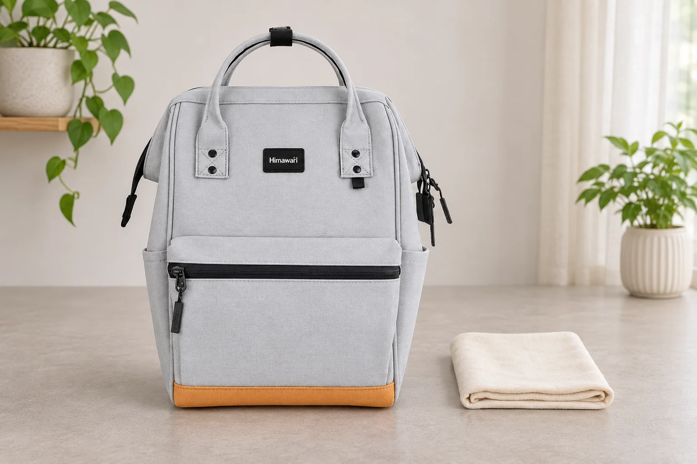
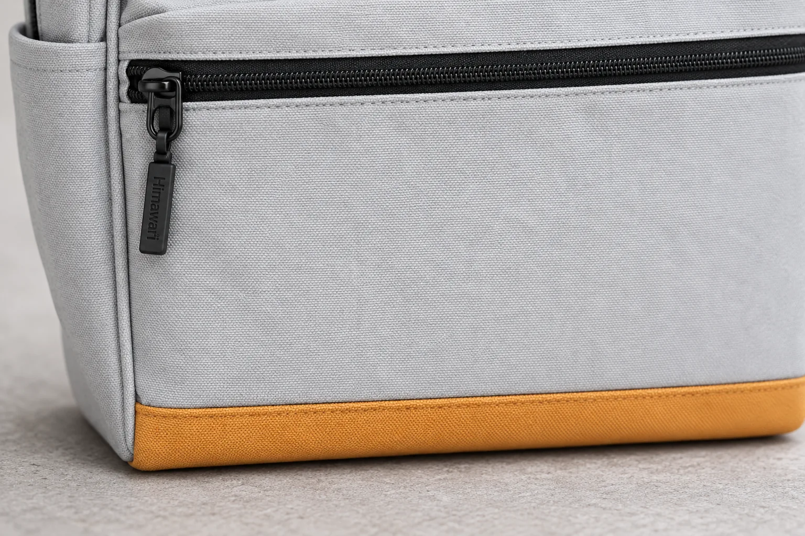

회색 백팩의 갈색 밑단 경계에 때가 묻었다면

한동안 쓴 백팩을 밝은 곳에 내려놓습니다. 회색 앞판 바로 아래 갈색 밑단에 짧은 회색 줄이 생겼습니다. 두 색이 만나는 곳까지 닿은 줄입니다. 먼지가 얹힌 것처럼 보이니 한 번에 닦고 싶습니다. 잠깐, 처음 보았던 상태를 남겨두세요. 천으로 먼저 문지르면 어느 쪽에서 시작했는지 놓치기 쉽습니다. No.124S 그레이는 사진에서도 몸판과 밑단의 색이 뚜렷합니다. 앞쪽 원단과 밑단을 나란히 살펴보기 좋습니다.
색이 만나는 선 전체가 어두워 보이면
No.124S 그레이의 실제 제품 사진에서 회색 앞포켓 아래에 좁은 갈색 띠가 보입니다. 정면에서도 왼쪽과 오른쪽 끝에서 띠가 모서리를 따라 살짝 돌아갑니다. 빛이 닿는 방향을 살펴보세요. 실이 지난 자리와 조금 들어간 천은 같은 색의 주변 원단보다 어둡게 보일 수 있습니다. 가방을 밝은 곳에서 돌려 보세요. 맞은편의 같은 높이도 살핍니다. 익숙한 조명 아래에서는 먼지와 원래 경계가 같이 어둡게 묻혀 보일 때가 있어요.
선 전체가 어두운지, 줄 중간 어느 지점에서만 모양이 번지는지 살핍니다. 길고 반듯한 선이 옆모서리까지 비슷하게 이어진다면 원래 제품 사진의 경계와 비교해 보세요. 한 지점에서 선이 넓어지나요? 바닥 쪽 원단에도 밝은 점이 보이면 대조할 위치를 정할 수 있습니다. 그 자리만 가까이 찍고 가방 전체도 한 장 더 찍어 둡니다. 확대하면 어느 쪽 끝인지 나중에 찾기 쉽습니다. 그림자만 달라지는 상태라면 닦기 전의 자료로도 충분합니다.

가루가 보일 때 천은 어느 쪽에서 댈까요
No.124S 상품 안내는 부드러운 천으로 부분 관리한 뒤 그늘에서 말리라고 안내합니다. 회색과 갈색에 같은 천을 바로 쓰기 전에, 자국이 주로 놓인 면을 한쪽씩 보세요. 회색 앞판에 작은 가루만 보이나요? 천의 깨끗한 면을 찾아 그 자리부터 가볍게 다뤄 봅니다. 시작 위치를 봉제 경계에서 조금 떨어뜨리면 천이 건너편까지 움직이는지 알아보기 쉽습니다. 천이 경계를 지나가야 할 만큼 넓은 흔적이라면, 처음부터 두 색을 한 번에 닦아 버릴 필요는 없습니다.
밑단 쪽을 살필 때는 천을 뒤집거나 접어 아직 쓰지 않은 면을 댑니다. 천에 묻어난 것을 이미 닦은 쪽으로 가져오지 않고 확인하기 위해서입니다. 천에 무엇이 묻었다고 해서 바로 가방의 염료가 나온 것이라고 단정하기는 어렵습니다. 눈으로 벌써 묻어 있던 먼지였을 수도 있어요. 가방의 원래 색이 옅어 보이나요? 천에 색이 계속 묻어나는 경우에도 그 자리에서 멈추고 상태를 확인합니다. 반복해서 문지르는 동안에는 처음 경계가 어디였는지 살피기 더 어렵습니다.

자국이 경계 아래로 이어져 보이면 더 닦아도 될까요
천이 닿은 부분에서 먼저 움직이는 것은 표면의 가루일 수 있습니다. 그 가루가 줄어든 뒤에도 선 안쪽에 회색빛이 남으면 손을 멈춥니다. 가방을 처음 살펴본 방향으로 돌려 보세요. 선을 따라 한쪽만 눌려서 어두워 보이는 경우도 있습니다. 떨어지는 가루와 그대로 남는 색을 나누어 봐야 더 손댈지 결정할 단서가 생깁니다. 봉제선이 벌어지거나 실이 올라와 있으면 천 모서리로 긁지 마세요. 앞모습과 낮은 옆모습을 찍어 둡니다.
제품 소개에는 겉감과 안감을 폴리에스터로 표기합니다. 이 소재 이름으로 바닥 배색 부위의 마감이나 관리 제품에 대한 반응까지 예측하기는 어렵습니다. 별도 안내가 없는 얼룩에 임의로 세정제를 바르고 진해진 곳을 건너편까지 넓게 문지르는 동작은 피하는 편이 좋습니다. 젖어 있다면 제품 안내의 그늘 건조 조건에 맞춰 말린 뒤 같은 자리에서 색을 확인해 보세요. 가방이 젖은 상태에서 보이는 색만으로 자국이 지워졌는지 판단하기는 어렵습니다.
가방을 세우면 자국이 앞에서 좁은 줄로 보이기도 합니다. 눕혀 보면 갈색 원단 가장자리를 돌아 밑면까지 닿는 경우도 있어요. 이때 앞에서 잘 보이는 줄만 여러 차례 닦으면 어느 면에 흔적이 더 남았는지 비교하기 어렵습니다. 확인할 면을 바꾸려면 가방을 깨끗한 곳에 받칩니다. 밑단이 접히지 않게 놓으세요. 앞판의 색 경계에서 밑면으로 이어지는 자리만 살펴보세요. 밑면 전체가 어두워 보인다면 앞 사진과 비슷한 빛에서 좌우 모서리를 한 장에 담아 두세요. 다음번에 확인할 때는 확대율을 맞추는 것보다 빛과 모서리 방향을 맞추는 편이 편합니다.
제품 문의에 보낼 사진에는 두 색을 함께 넣습니다
제품을 펼쳐 달라는 문의가 아니므로 포켓 안쪽 전체까지 찍을 필요는 없습니다. 가까운 컷에는 회색 앞판, 갈색 밑단, 그 사이 경계가 모두 나오도록 합니다. 전체 사진에서는 가방을 눕혔는지 세웠는지 드러나게 찍으세요. 천으로 이미 가볍게 닦았다면 어디를 만졌는지 덧붙입니다. 마른 뒤에도 남는 자리와 천에 무엇이 묻었는지를 구분해 적습니다. 가장자리의 짙은 선이 궁금한지 부드러운 천으로 관리하기 어려운지 상대가 바로 이해할 수 있습니다.
마지막에 양쪽을 비교할 때는 앞포켓의 지퍼 아래에서 밑단까지 같은 위치만 다시 보세요. 새 사진을 찍으면 밝기가 달라져 나아 보이기도 합니다. 같은 곳에 가방을 놓습니다. 첫 사진과 모서리 방향을 맞추면 변화가 어디에 남았는지 찾기 편합니다. 겉에서 가루가 더 보이지 않고 실과 천에 변화가 없으면 그날 관리는 거기서 끝내도 됩니다. 자국이 남았거나 봉제 경계까지 상태가 달라 보이나요? 어느 부분을 확인해야 하는지 표시해 두고 제품 안내를 받습니다.